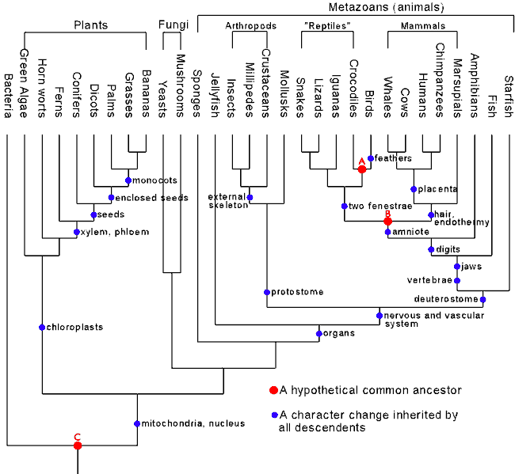

Introduction to Phylogenetics
Descent from a common ancestor entails a process of branching and divergence, in common with any genealogical process. Genealogies can be graphically illustrated by tree-like diagrams, and this is why biologists often refer to the genealogy of species as the "tree of life". In evolutionary theory, diagrams such as these are known as phylogenetic trees or phylogenies. One of the most important, powerful, and basic predictions from the hypothesis of universal common descent is the existence of a unique, historical, universal phylogenetic tree for species that primarily reproduce via vertical genetic mechanisms (another type of inheritance, horizontal gene transfer, can complicate phylogenies and even the concept of a species, see Caveats below). A thorough grasp of phylogenetics is necessary for understanding macroevolutionary deductions. The consensus model which evolutionary biologists use to represent the well-supported branches of the universal tree of life I will refer to as the "standard phylogenetic tree". Figure 1 shows a simplified example of some of the more familiar branches of the universal phylogenetic tree.
In the following section is a brief overview of phylogenetic trees and of how biologists determine them. This overview becomes increasingly technical as it proceeds. The material up until the maximum parsimony heading is essential for understanding the rest of this FAQ. The remaining phylogenetic discussion is given for completeness and to allow the interested reader the opportunity to delve as far as is desired.
|
 Figure 1. The Consensus Phylogenetic Tree of All Life. |
Phylogenetic trees represent evolutionary relationships
Phylogenetics is the scientific discipline concerned with describing and reconstructing the patterns of genetic relationships among species and among higher taxa. Phylogenetic trees are a convenient way of visually representing the evolutionary history of life. These diagrams illustrate the inferred relationships between organisms and the order of speciation events that led from earlier common ancestors to their diversified descendants.
A phylogenetic tree has several parts, shown in Figure 2. Nodes represent taxonomic units, such as an organism, a species, a population, a common ancestor, or even an entire genus or other higher taxonomic group. Branches connect nodes uniquely and represent genetic relationships. The specific pattern of branching determines the tree's topology. Scaled trees have branch lengths that are proportional to some important biological property, such as the number of amino acid changes between nodes on a protein phylogeny (see Figure 3). Trees may also be rooted or unrooted. Rooted trees have a special node, known as the root, that represents a common ancestor of all taxa shown in the tree. Rooted trees are thus directional, since all taxa evolved from the root. Unrooted trees illustrate relationships only, without reference to common ancestors.
A common misconception is that some modern species are ancestral to other modern species. However, all modern species are found at the tips of the tree's branches, and one modern species is as "evolved" as any other. That is, although mammals are thought to have evolved from something that resembled modern reptiles, modern reptiles are just as "old" evolutionarily as modern mammals (Brooks 1991, p.68; Futuyma 1998, p.113).
Methods for determining phylogenetic trees: Cladistics and numerical phylogenetics
Of all clean birds ye shall eat.
But these are they of which ye shall not eat:
The eagle, and the ossifrage, and the ospray,
And the glede, and the kite, and the vulture after his kind,
And every raven after his kind,
And the owl, and the night hawk, and the cuckow, and the hawk after his kind,
The little owl, and the great owl, and the swan,
And the pelican, and the gier eagle, and the cormorant,
And the stork, and the heron after her kind, and the lapwing,
and the bat.Deuteronomy 14:11-18, KJV
If modern species have descended from ancestral ones in this tree-like, branching manner, it should be possible to infer the true historical tree that traces their paths of descent. Phylogenies have been inferred by biologists ever since Darwin first proposed that life was united by common descent over 140 years ago. Rigorous algorithmic methodologies for inferring phylogenetic trees have been in use for over the past 50 years.
In 1950, taxonomist Willi Hennig proposed a method for determining phylogenetic trees based on morphology by classifying organisms according to their shared derived characters, which are called synapomorphies (Hennig 1966). This method, now called cladistics, does not assume genealogical relatedness a priori, since it can be used to classify anything in principle, even things like books, cars, or chairs that are obviously not genealogically related in a biological sense (Kitching et al. 1998, Ch. 1, p. 26; ). Using firm evolutionary arguments, however, Hennig justified this method as the most appropriate classification technique for estimating evolutionary relationships generated by lineal descent. In fact, Hennig's cladistic method is nothing more than a formalization of the methods systematic biologists had been using intuitively ever since Linnaeus penned Systema Naturae. Biologists today construct their phylogenetic trees based on Hennig's method, and because of cladistics these phylogenetic trees are reproducible and independently testable (Brooks 1991, Ch. 2; Kitching et al. 1998).
| Phylogenetic Jargon |
|---|
|
apomorphy: A derived character of a group of organisms, not shared with ancestors of a group of organisms. Apomorphies are unique to the group, and are therefore group-defining. bootstrap: A technical statistical procedure for estimating the variability of a measurement. In phylogenetics, bootstrapping involves the production of a new, pseudo-dataset by randomly pulling data points from the original dataset. For each pseudo-dataset, a new phylogeny is inferred. Rounds of this provide an estimation of the well- and poorly-supported regions of the original phylogeny. character: An observable feature of an organism useful for distinguishing it from another. For example, a nucleotide in a DNA sequence, an amino acid in a protein sequence, or morphological characters like hair, feathers, or the presence or absence of certain bones. cladistics: A class of phylogenetic techniques that construct trees (cladograms) by grouping taxa into nested hierarchies according to shared derived characters (synapomorphies). Cladistics is closely associated with the parsimony criterion. cladogram: A hierarchical classification of taxa represented as a tree. Cladograms formally are independent of evolutionary theory, though in practice they are usually interpreted as phylogenies. derived character: See apomorphy. least squares: A phylogenetic distance matrix criterion. The best tree is the one with the smallest squared difference between the observed pairwise distances and the distances calculated from the inferred tree. It has a strong statistical justification, as it is based upon the common linear least squares statistical technique. Least squares is guaranteed by the Gauss-Markov theorem to converge on the correct answer as more data is included in the analysis if a proper distance metric is used, i.e. least squares is statistically consistent. Weighted versions correct for random variability and bias due to longer branch lengths. maximum likelihood: A cladistic criterion for inferring trees with character conflict. The best tree and evololutionary model maximize the probability of the observed data. Maximum likelihood has a strong statistical foundation. Given a correct model of evolutionary change, it is guaranteed to be statistically consistent, i.e. it will converge on the correct tree as more data is added. Maximum likelihood generally performs the best of all methods in simulations, but it is very computationally expensive. Unlike parsimony, it explicitly relies upon a specific evolutionary model. minimum evolution: A phylogenetic distance matrix criterion. The best tree is the one in which the sum of the branch lengths is smallest. neighbor-joining: A distance matrix algorithm for inferring trees. It is an approximation to the least-squares and minimum evolution methods. node: A point in a phylogeny where branches meet or end. Nodes at the tip or end of a branch represent taxa. In rooted trees, internal nodes represent common ancestors. parsimony: A phylogenetic criterion for inferring trees with character conflict. Parsimony requires that the best tree is the one with the least character conflict. It is known to produce the incorrect phylogeny in certain cases, such as when evolutionary rates are high or certain branches are long. phenetics: Sometimes known as numerical taxonomy, phenetic methods classify and group organisms based on overall similarity, usually without explicit reference to their phylogenetic relationships. phylogeny: A branching, tree-like diagram representing genealogical relationships among taxa. Rooted phylogenies specify common ancestors and have a time axis. plesiomorphy: A primitive character, shared with the ancestors of a group of organisms. Since it is common to more than just the group being considered, a plesiomorphy is not group-defining. primitive character: See plesiomorphy. root: A common ancestor of all taxa in a phylogeny. Chronologically, the root is the oldest node. synapomorphy: A derived character that is shared between two groups of organisms. UPGMA: A distance matrix-based clustering method for constructing trees. Rarely used, it is very fast but assumes constant evolutionary rates throughout the tree (a property called ultrametricity). |
Cladistic methods are often contrasted with "phenetic" methods. Phenetic methods cluster and classify species based upon the number of identical characters that they share, that is, based upon overall similarity. Such methods can run into trouble with organisms like dolphins and tuna, which have many superficial similarities. These organisms, however, are not closely related and should not be classified together if one expects classification to reflect phylogeny.
In contrast, cladistic-based phylogenies group taxa into nested hierarchies, and they are determined using only shared derived characters of organisms, not shared primitive characters (Brooks 1991, pp. 35-36; Kitching et al. 1998, Ch. 1; Maddison and Maddison 1992, p. 49). In technical phylogenetic jargon, primitive characters are called plesiomorphies, and derived characters are called apomorphies. In cladistics, related species are grouped together because they share derived characters (i.e., apomorphies) that originated in a common ancestor of the group, but were not present in other, earlier ancestors of the group. These shared, derived features are called synapomorphies. Primitive and derived are therefore relative terms, depending upon the specific group being considered. For example, backbones are primitive characters of vertebrates, while hair is a derived character particular to mammalian vertebrates. However, when considering mammals only, hair is primitive, whereas an opposable thumb is derived.
In real-life phylogenetic analyses, shared derived characters may be in conflict with other derived characters. Thus, objective methods are required for resolving this character conflict (Kitching et al. 1998, Ch. 1; Maddison and Maddison 1992, p. 49). For instance, wings are a derived character of birds and of bats. Based upon this character alone, the cladistic method would group bats and birds together, which is how the author of Deuteronomy grouped them in the Biblical quote above. However, other shared derived characters indicate that bats should be grouped with wingless mammals, and that birds should be grouped with wingless dinosaurs.
In the past 40 years, several algorithmic methods have been devised to resolve such instances of character conflict and to infer correct phylogenetic trees (Felsenstein 2004, Ch. 10). The following sections outline some of the most successful of these methods. Each method attempts to infer a phylogeny from existing data, and each has its respective strengths and weaknesses. Years of empirical testing and simulation have shown that, in general, these different algorithms, each with very different underlying assumptions, converge on trees that are highly similar when judged statistically (Li 1997, Chs 5 and 6; Nei and Kumar 2000, Chs 6, 7, and 8).
Maximum parsimony
One of the oldest, most basic, and most frequently used methods for character resolution is the maximum parsimony (MP) criterion (Edwards and Cavalli-Sforza 1963; Kitching et al. 1998). The parsimony criterion mandates that the best tree describing the data is the tree that minimizes the amount of character conflict. For example, consider a dataset containing 10 shared derived characters that group bats with apes (rather than with birds), and with one character that groups bats with birds (rather than apes). According to the parsimony criterion, the tree giving the first grouping should be preferred.
Currently, parsimony is the method of choice for reconstructing morphological trees (Kitching et al. 1998). It is very fast computationally, and it can be robust to differences in evolutionary rate among characters. However, maximum parsimony consistently finds the correct phylogeny only when we expect character conflict to be low or evolution to proceed parsimoniously (Felsenstein 2004, Ch. 9; Kitching et al. 1998, p. 17). If rates of evolution are slow and branches are short, character conflict will be low and parsimony will work well (Felsenstein 2004, Ch. 9; Felsenstein 1981a; Li 1997, p. 128). If character conflict is moderate or high in reality, then it is very unlikely that the true tree will have the least amount of character conflict. When rates of evolution are high, or when some branches are very long, or when the number of possible character states is limited, character conflict can be common. This is often true for nucleotide sequences, which have only four possible character states (A, C, T, or G). In cases such as these, other phylogenetic methods can be more accurate than parsimony.
Maximum likelihood
Another commonly used phylogenetic criterion is maximum likelihood (ML), an effective and robust statistical technique now used in all scientific fields (Edwards and Cavalli-Sforza 1964; Felsenstein 1981b; Fisher 1912). Many well-known statistical estimators are actually maximum likelihood estimators. For example, the common sample average as an estimate of the mean of a Gaussian distribution and the least-squares fit of a line to a set of points are both maximum likelihood estimators. Using ML, one can infer rates of evolution directly from the data and determine the tree that best describes that data given those inferred rates. In other words, ML finds the tree and evolutionary parameters that produce the observed data with the highest probability. Unlike parsimony, ML finds trees with the expected amount of character conflict given the evolutionary rates inferred from the data, even if those rates are high. ML is a computationally intensive method that can be very time-consuming.
Distance methods
Due to their computational speed, distance matrix methods are some of the most popular for inferring phylogenies (Nei and Kumar 2000, Ch. 6). All distance methods transform character data into a matrix of pairwise distances, one distance for each possible pairing of the taxa under study. Distance matrix methods are not cladistic, since the information about derived and primitive characters has been lost during this transformation. Distance methods approach phylogenetic inference strictly as a statistical problem, and they are used almost exclusively with molecular data. Although they are not cladistic, distance methods can be thought of as approximations to cladistic methods, and several of the methods are guaranteed mathematically to converge on the correct tree as more data is included.
The most simple distance metric is merely the number of character differences between two taxa, such as the number of nucleotide differences between two DNA sequences. Many other ways of calculating molecular sequence distances exist, and most attempt to correct for the possibility of multiple changes at a single site during evolution. Methods for calculating distances between sequences are usually named for their originators, such as Kimura's two-parameter (K2P), Jukes-Cantor (JC), Tamura-Nei (TN), Hasegawa, Kishino, and Yano (HKY), and Felsenstein 1984 (F84). Other important distance metrics are General Time Reversible (GTR) and LogDet (Felsenstein 2004, pp. Chs 11 and 13; Nei and Kumar 2000, Chs 2 and 3; Li 1997, Chs 3 and 4).
Once a distance matrix for the taxa being considered is in hand, there are several distance-based criteria and algorithms that may be used to estimate the phylogenetic tree from the data (Felsenstein 2004, Ch. 11; Li 1997, Ch. 5). The minimum evolution (ME) criterion finds the tree in which the sum of all the branch lengths is the smallest. Weighted and unweighted least squares criteria calculate the discrepancy between the observed pairwise distances and the pairwise distances calculated from the branch lengths of the inferred tree. Least squares then finds the tree that minimizes the square of that discrepancy. Least squares methods are some of the most statistically justified and will converge on the correct tree as more data are included in the analysis (given a mathematically proper distance metric). The neighbor-joining (NJ) algorithm is extremely fast and is an approximation of the least squares and minimum evolution methods. If the distance matrix is an exact description of the true tree, then neighbor-joining is guaranteed to reconstruct the correct tree. The UPGMA clustering algorithm (a confusing acronym) is also extremely fast, but it is based upon the unlikely assumption that evolutionary rates are equal in all lineages. UPGMA is rarely used today except as an instructional tool.
Statistical Support for Phylogenies
A phylogeny is a best approximation of the correct, historical tree using a given phylogenetic method. Some phylogenetic analyses are strongly supported by the data, some are weakly supported, and different parts of a tree may have more support than others. When comparing two independently determined phylogenies, one must take into account the statistical support assigned to each branch of the phylogenies. As with all scientific analyses, the details of a phylogenetic tree may change as new information and data are incorporated (Maddison and Maddison 1992, pp. 112-123; Li 1997, pp. 36-146; Felsenstein 1985; Futuyma 1998, p. 99; Hillis and Bull 1993; Huelsenbeck et al. 2001; Swofford et al. 1996, pp. 504-509).
Bootstrapping is the most popular statistical method for assessing the reliability of the branches in a phylogenetic tree (Felsenstein 1985). Bootstrapping is a statistical technique for empirically estimating the variability of a parameter (Efron 1979; Efron and Gong 1983). In a bootstrap analysis, a fictional dataset is created by randomly sampling data from the real dataset until a new dataset is created of the same size. This process is done repeatedly (hundreds or thousands of times), and the parameter of interest is estimated from each fictional dataset. The variability of these bootstrapped estimations is itself an estimate of the variability of the parameter of interest.
In phylogenetics, a new phylogeny is inferred from each bootstrapped dataset (Felsenstein 1985). These bootstrapped phylogenies will likely have different topologies. From these different bootstrapped trees, the variability in the inferred tree can be estimated. The parts of the bootstrapped trees that are in common are ascribed a high confidence, while the parts that vary extensively are assigned a low confidence. Trees constructed from random data do not result in high confidence trees or branches when bootstrapped. Thus, bootstrapping provides one way to test whether a phylogenetic tree is genuine.
Does Phylogenetic Inference Find Correct Trees?
In order to establish their validity in reliably determining phylogenies, phylogenetic methods have been empirically tested in cases where the true phylogeny is known with certainty, since the true phylogeny was directly observed.
-
Bacteriophage T7 was propagated and split sequentially in the presence of a mutagen, where each lineage was tracked. Out of 135,135 possible phylogenetic trees, the true tree was correctly determined by phylogenetic methods in a blind analysis. Five different phylogenetic methods were used independently, and each one chose the correct tree (Hillis et al.1992 ).
-
In another study, 24 strains of mice were used in which the genealogical relationships were known. Cladistic analysis reproduced almost perfectly the known phylogeny of the 24 strains (Atchely and Fitch 1991).
-
Bush et al. used phylogenetic analysis to retrospectively predict the correct evolutionary tree of human Influenza A virus 83% of the time for the flu seasons spanning 1983 to 1994.
-
In 1998, researchers used 111 modern HIV-1 (AIDS virus) sequences in a phylogenetic analysis to predict the nucleotide sequence of the viral ancestor of which they were all descendants. The predicted ancestor sequence closely matched, with high statistical probability, an actual ancestral HIV sequence found in an HIV-1 seropositive African plasma sample collected and archived in the Belgian Congo in 1959 (Zhu et al.1998 ).
-
In the past decade, phylogenetic analyses have played a significant role in successful convictions in several criminal court cases (Albert et al. 1994; Arnold et al. 1995; Birch et al. 2000; Blanchard et al. 1998; Goujon et al. 2000; Holmes et al. 1993; Machuca et al. 2001; Ou et al. 1992; Veenstra et al. 1995; Vogel 1997; Yirrell et al. 1997), and phylogenetic reconstructions have now been admitted as expert legal testimony in the United States (97-KK- 2220 State of Louisiana v. Richard J. Schmidt [PDF]). The legal test in the U. S. for admissibility of expert testimony is the Daubert guidelines (U. S. Supreme Court Case Daubert v. Merrell Dow Pharmaceuticals, Inc., 509 U.S. 579, 587-89, 113 S. Ct. 2786, 2794, 125 L. Ed. 2d 469, 1993). The Daubert guidelines state that a trial court should consider five factors in determining "whether the testimony's underlying reasoning or methodology is scientifically valid": (1) whether the theory or technique in question can be and has been tested; (2) whether it has been subjected to peer review and publication; (3) its known or potential error rate; (4) the existence and maintenance of standards controlling its operation; and (5) whether it has attracted widespread acceptance within the relevant scientific community (quoted nearly verbatim). Phylogenetic analysis has officially met these legal requirements.
Caveats with Phylogenetic Inference
As with any investigational scientific method, certain conditions must hold in order for the results to be reliable. A common premise of many molecular phylogenetic methods is that genes are transmitted via vertical, lineal inheritance, i.e. from parent to offspring. If this premise is violated, gene trees will not recapitulate an organismic or species phylogeny. This assumption is violated in instances of horizontal transfer, e.g. in transformation of a bacterium by a DNA plasmid, or in retroviral insertion into a host's genome. During the early evolution of life, before the advent of multicellular organisms, horizontal transfer was likely very frequent (as it is today in the observed evolution of bacteria and other unicellular organisms). Thus, it is questionable whether molecular phylogenetic methods are applicable, even in principle, to resolving the evolutionary patterns of many microbes, including early evolution near the most recent common ancestor of all living organisms (Doolittle 1999; Doolittle 2000; Woese 1998).
The list below gives some of the more important caveats that scientists must keep in mind when interpreting the results of a phylogenetic analysis (Swofford 1996, pp. 493-509). In general, the contribution of each of these concerns will be "averaged out" by including more independent characters in the phylogenetic analysis, such as more genes and longer sequences.
-
Correlated characters: each character used in the analysis optimally should be genetically independent. Characters that are strongly functionally correlated are better thought of as a single character. There are statistical tests that can help control for unrecognized character correlation, such as the block bootstrap and jackknife.
-
True structural convergence: structures that have undergone convergent evolution can artificially result in incorrect tree topologies. Including more characters in the analysis also aids in overcoming convergent effects.
-
Character reversals: characters that revert to an ancestral state pose a challenge similar to convergence. Because DNA and RNA only have four different character states, they are especially prone to reversals during evolution.
-
Lost characters: lineages that have lost characters (such as whales and their hindlimbs) can also pose cladistic problems. Often, if a cladistic analysis indicates strongly that a certain character has been lost during evolution, it is best to omit this character in higher resolution analyses of that lineage.
-
Missing characters: incomplete fossils are problematic, since they may lack important characters. Better fossils are the answer.
-
Intractable number of possible phylogenetic trees: for computational reasons, this is one of the most important phylogenetic challenges to overcome. The goal of a phylogenetic reconstruction is to determine the best tree that the data supports. For an analysis of only five species, there are 15 possible trees. For an analysis of 50 species, there are over 1074 possible trees that must be searched—which is computationally impossible. This problem is not as bad as it first sounds, since narrowing down the number of reasonable trees can be trivial in many cases (for instance, using the branch and bound algorithm). Several methods have been developed to work around this issue successfully, and ultimately more powerful computers are better.
-
Maximum Likelihood assumptions: the maximum likelihood method makes explicit assumptions about the pattern of nucleotide substitutions based upon a given model of nucleotide evolution. These assumptions are based upon a solid statistical foundation; however, the validity of the models must be considered when evaluating the results.
-
Long branch attraction: lineages that diverged relatively long ago will tend to "cluster" together in a phylogenetic reconstruction under the appropriate conditions. The mathematical reasons are somewhat complicated, but using more slowly evolving genes (or regions of genes) helps overcome the problem.
-
Rate variation between lineages: rates of nucleotide substitution may differ between lineages; this can contribute to long branch attraction and result in incorrect tree topologies. However, maximum likelihood and least squares methods are particularly useful here.
-
Rate variation within a single gene: rates of nucleotide substitution can vary along the length of a single gene—this also exacerbates long branch attraction.
-
Gene trees are not equivalent to species trees: from simple Mendelian genetics we know that genes segregate individually, and that throughout time individual genes do not necessarily follow organismic genealogy (Avise and Wollenberg 1997; Fitch 1970; Hudson 1992; Nichols 2001; Wu 1991). An obvious example is the fact that while you may have brown eyes, your child may have the genes for blue eyes—but that does not mean your child is not your descendent, or that your brown-eyed children are more closely related to you than your blue-eyed children. Including multiple genes in the analysis is a solution to this conundrum. Based upon simple genetic calculations, an analysis of more than five genes is usually necessary to accurately reconstruct a species phylogeny (Wu 1991).
For more information on cladistics, you can consult one of several excellent online cladistic resources, such as the SASB Introduction to Phylogenetics, UC Berkeley's Integrative Biology Phylogenetics Lab, or Diana Lipscomb's stellar Basics of Cladistic Analysis, downloadable in Adobe Acrobat PDF format. A good, concise description for the layperson can be found at the Journal of Avocational Paleontology. Finally, you can read Charles Darwin's explanation in The Origin of Species of the "Tree of Life", where the concept of a phylogenetic tree was first introduced.
|
Previous |
Next |
References
Albert, J., Wahlberg, J., Leitner, T., Escanilla, D. and Uhlen, M. (1994) "Analysis of a rape case by direct sequencing of the human immunodeficiency virus type 1 pol and gag genes." J Virol 68: 5918-24. [PubMed]
Arnold, C., Balfe, P. and Clewley, J. P. (1995) "Sequence distances between env genes of HIV-1 from individuals infected from the same source: implications for the investigation of possible transmission events." Virology 211: 198-203. [PubMed]
Atchely, W. R., and Fitch, W. M. (1991) "Gene trees and the origins of inbred strains of mice." Science 254: 554-558. [PubMed]
Avise, J. C., and Wollenberg, K. (1997) "Phylogenetics and the origin of species." PNAS 94: 7748-7755. http://www.pnas.org/cgi/ content/full/94/15/7748
Birch, C. J., McCaw, R. F., Bulach, D. M., Revill, P. A., Carter, J. T., Tomnay, J., Hatch, B., Middleton, T. V., Chibo, D., Catton, M. G., Pankhurst, J. L., Breschkin, A. M., Locarnini, S. A. and Bowden, D. S. (2000) "Molecular analysis of human immunodeficiency virus strains associated with a case of criminal transmission of the virus." J Infect Dis 182: 941-4. http://jid.oxfordjournals.org/content/182/3/941.long
Blanchard, A., Ferris, S., Chamaret, S., Guetard, D. and Montagnier, L. (1998) "Molecular evidence for nosocomial transmission of human immunodeficiency virus from a surgeon to one of his patients." J Virol 72: 4537-40. http://jvi.asm.org/cgi/content/full/72/5/4537?view=full&pmid=9557756
Brooks, D. R., and McLennan, D. A. (1991) Phylogeny, ecology, and behavior. Chicago: University of Chicago Press.
Bush, R. M., C. A. Bender, et al. (1999) "Predicting the evolution of human influenza A." Science 286: 1921-1925. [PubMed]
Doolittle, W. F. (1999) "Phylogenetic Classification and the Universal Tree." Science 284: 2124. [PubMed]
Doolittle, W. F. (2000) "The nature of the universal ancestor and the evolution of the proteome." Current Opinion in Structural Biology 10: 355-358. [PubMed]
Edwards, A. W. F. and Cavalli-Sforza, L. L. (1963) "The reconstruction of evolution." Annals of Human Genetics 27: 105-106.
Efron, B. (1979) "Bootstrap methods: Another look at the jackknife." Annals of Statistics 7: 1-26.
Efron, B. and Gong, G. (1983) "A leisurely look at the bootstrap, the jackknife, and cross validation." American Statistician 37: 36-48.
Edwards, A. W. F. and Cavalli-Sforza, L. L. (1964) "Reconstruction of phylogenetic trees." in Phenetic and Phylogenetic Classification. ed. Heywood, V. H. and McNeill. London: Systematics Assoc. Pub No. 6.
Felsenstein, J. (1981) "A likelihood approach to character weighting and what it tells us about parsimony and compatibility." Biol J Linn Soc Lond 16: 183-196.
Felsenstein, J. (1981) "Evolutionary trees from DNA sequences: A maximum likelihood approach." J Mol Evol 17: 368-376. [PubMed]
Felsenstein, J. (1985) "Confidence limits on phylogenies: an approach using the bootstrap." Evolution 39: 783-791.
Felsenstein, J. (2004) Inferring Phylogenies. Sunderland, MA: Sinauer Associates.
Fisher, R. A. (1912) "On an absolute criterion for fitting frequency curves." Messenger of Mathematics 41: 155-160.
Fitch, W. M. (1970) "Distinguishing homologous from analogous proteins." Syst. Zool. 28: 132-163.
Futuyma, D. (1998) Evolutionary Biology. Third edition. Sunderland, MA: Sinauer Associates.
Goujon, C. P., Schneider, V. M., Grofti, J., Montigny, J., Jeantils, V., Astagneau, P., Rozenbaum, W., Lot, F., Frocrain-Herchkovitch, C., Delphin, N., Le Gal, F., Nicolas, J. C., Milinkovitch, M. C. and Deny, P. (2000) "Phylogenetic analyses indicate an atypical nurse-to-patient transmission of human immunodeficiency virus type 1." J Virol 74: 2525-32. http://jvi.asm.org/cgi/content/full/74/6/2525?view=full&pmid=10684266
Hennig, W. (1966) Phylogenetic Systematics. (English Translation). Urbana: University of Illinios Press.
Hillis, D. M., and Bull, J. J. (1993) "An empirical test of bootstrapping as a method for assessing confidence on phylogenetic analysis." Syst. Biol. 42: 182-192.
Hillis, D. M., J. J. Bull, et al. (1992) "Experimental phylogenetics: Generation of a known phylogeny." Science 255: 589-592. [PubMed]
Holmes, E. C., Zhang, L. Q., Simmonds, P., Rogers, A. S. and Brown, A. J. (1993) "Molecular investigation of human immunodeficiency virus (HIV) infection in a patient of an HIV-infected surgeon." J Infect Dis 167: 1411-4. [PubMed]
Hudson, R. R. (1992) "Gene trees, species trees and the segregation of ancestral alleles." Genetics 131: 509-513. [PubMed]
Huelsenbeck, J. P., Ronquist, F., Nielsen, R., and Bollback, J. P. (2001) "Bayesian inference of phylogeny and its impact on evolutionary biology." Science 294: 2310-2314. [PubMed]
Kitching, I. J., Forey, P. L., Humphries, C. J., and Williams, D. M. (1998) Cladistics: The Theory and Practice of Parsimony Analysis. Second Edition. The Systematics Association Publication No. 11. Oxford: Oxford University Press.
Li, W.-H. (1997) Molecular Evolution. Sunderland, MA: Sinauer Associates.
Machuca, R., Jorgensen, L. B., Theilade, P. and Nielsen, C. (2001) "Molecular investigation of transmission of human immunodeficiency virus type 1 in a criminal case." Clin Diagn Lab Immunol 8: 884-90. [PubMed]
Maddison, W. P., and Maddison, D. R. (1992) MacClade. Sunderland, MA: Sinauer Associates.
Nei, M. and Kumar, S. (2000) Molecular Evolution and Phylogenetics. New York, NY: Oxford University Press.
Nichols, R. (2001) "Gene trees and species trees are not the same." Trends Ecol Evol. 16: 358-364. [PubMed]
Ou, C. Y., Ciesielski, C. A., Myers, G., Bandea, C. I., Luo, C. C., Korber, B. T., Mullins, J. I., Schochetman, G., Berkelman, R. L., Economou, A. N. and et al. (1992) "Molecular epidemiology of HIV transmission in a dental practice." Science 256: 1165-71. [PubMed]
Swofford, D. L., Olsen, G. J., Waddell, P. J., and Hillis, D. M. (1996) "Phylogenetic inference." In Molecular Systematics, pp 407-514. Hillis, D. M., Moritiz, C. and Mable, B. K. eds., Sunderland, Massachusetts: Sinauer.
Veenstra, J., Schuurman, R., Cornelissen, M., van't Wout, A. B., Boucher, C. A., Schuitemaker, H., Goudsmit, J. and Coutinho, R. A. (1995) "Transmission of zidovudine-resistant human immunodeficiency virus type 1 variants following deliberate injection of blood from a patient with AIDS: characteristics and natural history of the virus." Clin Infect Dis 21: 556-60. [PubMed]
Vogel, G. (1997) "Phylogenetic analysis: getting its day in court." Science 275: 1559-60. [PubMed]
Woese, C. (1998) "The universal ancestor." PNAS 95: 6854-6859. http://www.pnas.org/cgi/ content/full/95/12/6854
Wu, C. I. (1991) "Inferences of species phylogeny in relation to segregation of ancient polymorphisms." Genetics 127: 429-435. [PubMed]
Yirrell, D. L., Robertson, P., Goldberg, D. J., McMenamin, J., Cameron, S. and Leigh Brown, A. J. (1997) "Molecular investigation into outbreak of HIV in a Scottish prison." Bmj 314: 1446-50. http://bmj.com/cgi/content/full/314/7092/1446?view=full&pmid=9167560
Zhu, T., B. Korber, et al. (1998) "An African HIV-1 sequence from 1959 and implications for the origin of the epidemic." Nature 391: 594-597. [PubMed]